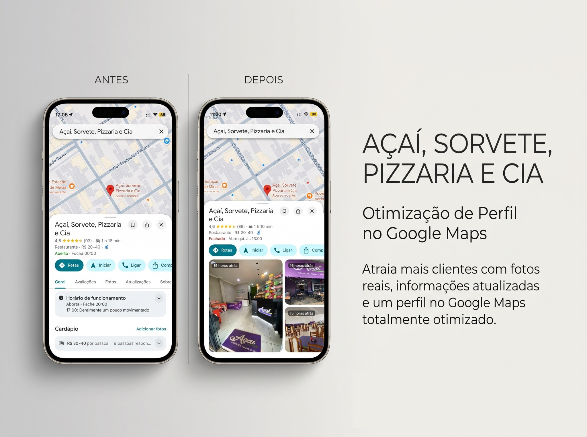
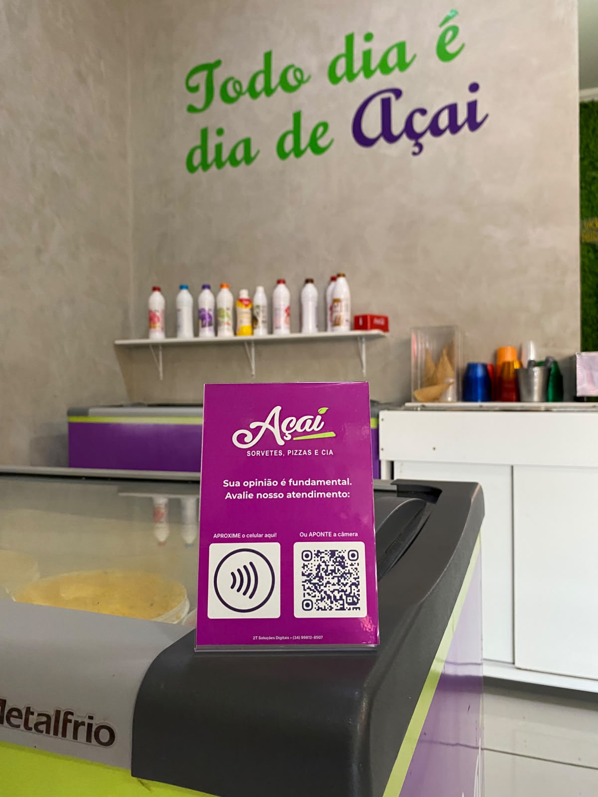

Site Profissional
Páginas rápidas, elegantes e focadas em apresentar seus serviços diretamente para o WhatsApp.
Não basta ter o melhor serviço se o cliente não consegue te encontrar. Implementamos um ecossistema completo para o comércio local: Perfil no Google, site de alta conversão e placas inteligentes de avaliação.
Três pilares estratégicos para transformar visitantes em contatos reais no seu WhatsApp.
Páginas rápidas, elegantes e focadas em apresentar seus serviços diretamente para o WhatsApp.
Estruturação avançada para sua empresa dominar o mapa da cidade e ser a primeira escolha.
Displays em acrílico com NFC e QR Code. O cliente aproxima o celular e avalia seu negócio na hora.
Ter um excelente produto não é mais suficiente se o seu cliente não consegue encontrar ou confiar na sua empresa em poucos segundos.
Quando alguém da sua cidade pesquisa o que você vende, acaba indo direto para o concorrente.
Perfis desatualizados e sem um site profissional passam a impressão de amadorismo e afastam bons clientes.
88% das pessoas confiam no Google. Sem avaliações 5 estrelas, sua empresa gera desconfiança.
Veja como transformamos a presença física e digital de negócios reais.


Um fluxo fluido e sem atrito para conduzir o morador da sua região da dúvida inicial até a conversa no WhatsApp.
O cliente pesquisa por serviços ou produtos na sua cidade através do Google e encontra sua empresa no mapa.
Ele nota seu perfil impecável, com fotos atrativas e avaliações 5 estrelas obtidas pelas Placas Inteligentes, gerando segurança imediata.
Ao entrar em seu site profissional, ele será apresentado a sua empresa de uma forma rápida, direta e sem distrações.
Com um único toque, ele abre o WhatsApp do seu negócio com uma mensagem pronta para fechar o pedido ou agendamento.